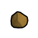
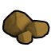
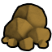
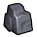
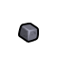
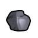

未标注科技档未标注Vile本地补丁×1原料级·无档·闪锌矿（锌，锰，钴）Sphalerite
不可塑形建造/打造时选不到这种材质;仅作配方原料(被 4 条配方消耗)

生效·aCore_SK
生效·bCore_SK
生效·cCore_SKThings/Item/Ores/Tin StackCount (175,135,60)被4条配方消耗
护甲 —/—/— 利钝 —/— 价值 25 质量 0.25 Bulk 0.25
stuff Matty
HSK RAR
产自 —(无产出配方:矿石开采 / 基础掉落 / 商人购买)
源 Vile's Materials Science
Ores_New.xml
未标注科技档未标注Vile本地补丁×1原料级·无档·钛磁铁矿（铁，钛，钒）Titanomagnetite
不可塑形建造/打造时选不到这种材质;仅作配方原料(被 3 条配方消耗)
 生效·aVile's Materials Science生效·bVile's Materials Science生效·cVile's Materials Science
生效·aVile's Materials Science生效·bVile's Materials Science生效·cVile's Materials ScienceThings/Item/Ores/Rutile StackCount (161,37,51)被3条配方消耗
护甲 —/—/— 利钝 —/— 价值 3 质量 0.25 Bulk 0.25
stuff Matty
HSK RAR
产自 —(无产出配方:矿石开采 / 基础掉落 / 商人购买)
源 Vile's Materials Science
Ores_New.xml
未标注科技档未标注HSK本地补丁×1上游补丁×2原料级·无档·白钨矿Wolframite
不可塑形建造/打造时选不到这种材质;仅作配方原料(被 3 条配方消耗)
① 起点 · Core_SK 的 Defs 写 Things/Item/Ores/Wolframite (230,230,255)
 aCore_SK
aCore_SK bCore_SK
bCore_SK
cCore_SK③ 生效(终态) Things/Item/Ores/Wolframite (230,230,255) ← 10_Vile贴图还原.xml

aCore_SK
bCore_SK cCore_SK
cCore_SKThings/Item/Ores/Wolframite StackCount (230,230,255)(230,230,255)被3条配方消耗贴图链 3 段
护甲 —/—/— 利钝 —/— 价值 18 质量 0.20 Bulk 0.20
stuff —
HSK RAR
产自 —(无产出配方:矿石开采 / 基础掉落 / 商人购买)
源 Core_SK
Items_Resource_Ore.xml